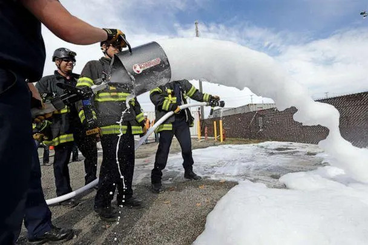

50
50
'Ticking time bomb': PFAS chemicals in drinking water alarm scientists over health risks
DEVIN DWYER, STEPHANIE EBBS and JACQUELINE YOO
August 10, 2021 . 8 min read
A family of colorless and tasteless man-made chemicals -- largely unregulated by the U.S. Environmental Protection Agency -- has become a growing concern for drinking water safety in thousands of American communities, as scientists increasingly see links to liver damage, high cholesterol, weakened immune systems and cancer.
"They basically fulfill the characteristics of a ticking time bomb," said Dr. Bo Guo, a University of Arizona hydrologist and expert on per- and polyfluoroalkyl substances, or PFAS, which are commonly used in hundreds of consumer products and in firefighting foams, a top source of PFAS contamination.
"They're very dangerous and they're migrating very slowly," Guo said of the heat-resistant chemicals.
WATCH: ABC News Live Prime investigates PFAS contamination in drinking water systems nationwide, 7p/9p ET. Streaming on Hulu, ABC News apps and ABCNews.com/live.
PHOTO: Seattle firefighters spray foam from two different types of valves during a specialized training session on how to respond to incidents involving oil trains, Oct. 8, 2014, in Seattle. (Elaine Thompson/AP, FILE)
While the health concerns around PFAS are not new, greater detection of the chemicals in water systems nationwide in recent years has begun to alarm state and local leaders and prompted Congress to consider urgent action.
Last month, the city of Tucson, Arizona, abruptly shut down a major water treatment facility that delivered drinking water to 60,000 residents because of a sudden surge in PFAS contamination that threatened to overwhelm groundwater filtration systems.
MORE: What you need to know about PFAS or 'forever' chemicals
"We don't have enough confidence to go to drinking water supply at this time," said John Kmiec, interim director of Tucson Water. "We know that there's this contamination out there. We don't know exactly what it does, but we know it's not going away."
Some level of PFAS, widely known as "forever chemicals" because they do not break down in the environment, have been found in water samples of 2,790 communities across 49 states, according to an analysis by the Environmental Working Group (EWG), an independent research and consumer watchdog organization pushing to limit exposure to chemicals through water, food and household products.

PHOTO: The Environmental Protection Agency declared south Tucson a Superfund site in 1983, leading to construction of a filtration plant to clean up two toxic chemicals in the water. (ABC News)
The contamination is likely much more widespread, experts said, because the EPA does not require testing for the chemicals and has not set a mandatory limit for how much PFAS are safe to drink in tap water.
"It's likely an issue in every community, and that's why we need testing to find out," said Sydney Evans, an EWG water quality analyst who has conducted PFAS testing across the country.

PHOTO: PFAS are colorless and tasteless chemicals that scientists say are potentially dangerous to human health if consumed over time. (ABC News)
In 2016, concerned by emerging health study data, the EPA issued an advisory to local water systems warning that prolonged exposure to the chemicals over 70 parts-per-trillion (ppt) may result in "adverse health effects." The agency encouraged utilities to voluntarily monitor and filter to below that level, but does not enforce a standard.
President Joe Biden pledged during the 2020 campaign to accelerate the study and regulation of PFAS, but his EPA has yet to designate the class of substances as hazardous under the Safe Drinking Water Act.
There is growing momentum in Congress to pressure the agency over the issue. In a bipartisan vote last month, the House approved a bill that would force the EPA to establish mandatory national limits for PFAS in drinking water within two years, requiring more water systems to start filtering the chemicals out. The Senate's pending bipartisan infrastructure bill would include billions to help communities get the job done.
PHOTO: John Kmiec, interim director of Tucson Water, says contamination by toxic, man-made PFAS, per- and polyfluoroalkyl substances, is a threat to drinking water safety in communities nationwide. (ABC News)
"The thing that gives me the greatest concern is not every community or every water company in the U.S. is actively testing for PFAS," said Kmiec. "So, there's a lot of small to medium sized utilities that may have no idea if they even have a problem in their watershed."
The chemicals have been detected on the shores of Michigan lakes, in the neighborhoods around old Naval Air Stations in Pennsylvania and even in the groundwater of a New Mexico dairy farm whose owner alleges in federal court documents that PFAS has poisoned the cows.
Water samples Evans collected and tested in March found elevated PFAS levels in the taps of some Virginia suburbs around the nation's capital. A firefighting foam spill at a small regional airport is a suspected source of the contamination.
"It's in the backyard of the people who are working on these issues," Evans said.
PHOTO: Historic drought fueled by climate change means residents of southern Arizona will be increasingly reliant on groundwater for drinking and irrigation, hydrologists say. (ABC News)
Groundwater contamination, like that in Tucson, has often been linked to industrial sites, landfills, airports and military bases where the chemicals may have seeped into the ground years ago. Analysts with EWG estimated that more than 200 million Americans could be drinking some amount of PFAS in their tap water every day.
MORE: Contaminated water still plagues lakeside community in Michigan
"We don't want them in our bodies because we know that they can make some people sick," said Dr. Jamie DeWitt, an East Carolina University toxicologist and pharmacologist leading cutting-edge research into how PFAS affect human bodies.
"Some of the effects that have been uncovered through studies of people who are exposed are different types of cancer. The ones that are most strongly linked are kidney and testicular cancer," DeWitt said. "We know they can produce negative effects on the liver; affect levels of cholesterol in the body; affect your body's immune system. They can also have effects on developing babies and on women while they are pregnant."
PHOTO: Sydney Evans, a science analyst with the Environmental Working Group in Washington, D.C., regularly tests water samples for the presence of PFAS, or per- and polyfluoroalkyl substances. (ABC News)
The EPA declined ABC News' request for an interview but said in a statement that addressing PFAS in drinking water is "a top priority" and that the agency is "developing a multi-year strategy to deliver critical public health protections."
The agency said it is moving "as expeditiously as possible" while balancing the law, industry interests and the science. The EPA recently announced steps to collect more data on PFAS in drinking water systems and said they plan to move forward with regulations on two specific, older types of the chemicals linked to known health problems.
PHOTO: Yolanda Herrera, longtime community advocate in Tucson, Ariz., has asked the Environmental Protection Agency to require testing for PFAS and set a national limit for how much of the chemicals can be in drinking water. (ABC News)
Many environmental and consumer advocates said the EPA's delay in regulating the chemicals more broadly is highly troubling.
"I think that the EPA -- we need to hold their feet to the fire because nothing is going to change, nothing will go forward until they set those limits," said Yolanda Herrera, a longtime Tucson community advocate for safe drinking water. "It's going to take all of us together to go to Congress, to go to the EPA to make major changes that need to be done."
Remediation of PFAS in water systems can be time-consuming and costly. The lack of an EPA-mandated drinking water standard complicates the process, state and local officials told ABC News, because there is not a clear benchmark for how much needs to be cleaned up and what resources governments need to meet it.
"We have no way of removing PFAS from the body," said Dr. Philippe Grandjean, a top environmental health expert and leading researcher on PFAS at the Harvard University School of Public Health. "We need to do everything we can to protect women ... against these compounds so that they are not burdening the next generation."
PHOTO: University of Arizona hydrologist Bo Guo calls the prevalence of synthetic chemicals in soils a 'ticking time bomb' as the substances can slowly contaminate groundwater years after release. (ABC News)
Estimates for eliminating the toxins in soil and water at sites nationwide exceed tens of billions of dollars.
"We have been cleaning and remediating PFAS with our own dime," said Tucson Mayor Regina Romero, "but the residents of our community should not be left holding the bag of something that they did not create."
Arizona state and local officials believe PFAS-laden firefighting foam deployed in training exercises and emergencies decades ago at Tucson's International Airport and Air National Guard complex is only now reaching groundwater wells miles away.
"The firefighting foam -- (the Air Force) has told us that they either, if it was used on the runway, they'd hose this stuff into the soil. If it was used in the hangars, they'd dilute it and dump it down the sewer system," said Tucson Councilman Steve Kozachik about the facility, which is home to one of the largest F-16 training installations in the world.
PHOTO: Scientists suspect runoff of firefighting foam deployed at Tucson's airport and Air National Guard facility decades ago has contaminated the city's underground aquifer. (ABC News)
The base is one of an estimated 687 military installations with known or suspected PFAS contamination, according to Pentagon data published by the Government Accountability Office in June.
A June 2021 report by the Arizona Department of Environmental Quality found PFAS concentrations in groundwater samples around the Tucson airport at 10,000 ppt -- far above the EPA's 70 ppt advisory. Scientists believe a plume of PFAS in the soil has been slowly migrating underground north and west toward wells that feed into the city's now-shuttered water treatment plant.
"The PFAS people see in groundwater is just a little fraction of the total PFAS at those contamination sites," Guo said.
MORE: Flint water crisis: Many residents say they still don't trust tap water nearly 7 years later
The Defense Department said it is investigating the scope of known or suspected contamination at or near hundreds of facilities but needs more time before it can launch a large-scale clean-up plan. Five years ago, the military began deploying what it calls a "new, environmentally responsible" firefighting foam, however it is not yet PFAS-free.
PHOTO: Steve Kozachik, Ward 6 city councilman in Tucson, Ariz., has been pressing the US military and EPA to accelerate the clean-up and regulation of PFAS chemicals in water systems nationwide. (ABC News)
"Tucson is a bellwether. We're the canary in the coal mine right now," said Kozachik. "We're saying to every other city in the country, this is an issue if you've got a military base in your community."
The indefinite shutdown of the water treatment facility on Tucson's south side because of PFAS has resurfaced old fears.
PHOTO: The city of Tucson, Ariz., abruptly shut down a major water treatment facility in June 2021 after soaring levels of chemical contamination in groundwater threatened to overwhelm filtration systems. (ABC News)
In 1983, the EPA listed Tucson as a Superfund site after the city's tap water was poisoned by an industrial spill of the chemical solvent trichloroethylene, or TCE. The pollution, which went undetected for years, is linked to cancer cases and deaths across the city's south side.
Hundreds of residents received financial settlements in major lawsuits, and state and local governments later funded construction of the water treatment facility. It has been cleaning up the water ever since -- until PFAS arrived.
PHOTO: Pattie Daggett says Tucson families like hers remain traumatized by widespread tap water contamination in the 1980s from a spill of the industrial solvent trichloroethlyene, or TCE. (ABC News)
"How is this being allowed to happen?" said Tucson native Pattie Daggett, 47, who was diagnosed with a rare form of blood cancer in 2014 that her doctor linked to TCE exposure in the water.
"They haven't even finished cleaning up the chemicals that were in the water before," said Daggett. "We've got PFAS now. Like, what? I wish I could tell you how worried I am."
'Ticking time bomb': PFAS chemicals in drinking water alarm scientists over health risks originally appeared on abcnews.go.com